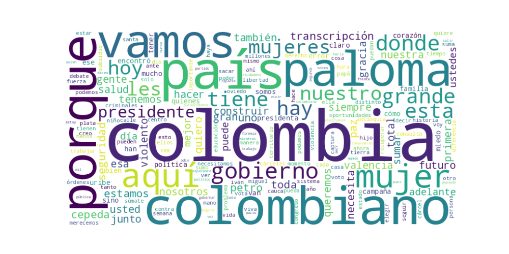

Seguidores: 571,449
1. Perfil de Comunicación: La candidata utiliza un estilo de comunicación directo, apasionado y cercano, con un lenguaje popular y emocional, diseñado para conectar con un amplio espectro de la población. Aunque mantiene un tono formal en discusiones de política nacional (como seguridad o economía), predomina un enfoque informal y coloquial, especialmente en interacciones en redes sociales y encuentros callejeros. Emplea un discurso altamente personalizado, con frecuentes referencias a su vida familiar (su hija Amapola, su esposo) y a su origen caucano, lo que busca proyectar autenticidad y arraigo. La comunicación es proactiva y enérgica, combinando consignas políticas con mensajes emotivos que buscan generar identificación.
2. Temas Principales: 1. Seguridad: Es el tema central y recurrente. Lo aborda desde un enfoque de "mano dura", prometiendo "militarizar" vías clave (como Cali-Popayán-Pasto), reactivar órdenes de captura, y acabar con la "paz total" del gobierno actual, a la que responsabiliza del aumento de la violencia. Ejemplo: "En mi gobierno se reactivan todas las órdenes de captura. Los criminales a la cárcel, no a tarimas." 2. Mujer y Liderazgo Femenino: Insiste en el hito histórico de elegir a la "primera mujer presidenta". Enmarca la candidatura como una lucha contra techos de cristal y promete políticas específicas para mujeres (subsidios a madres cabeza de hogar, créditos, vivienda a su nombre). Ejemplo: "Es tiempo de una mujer presidenta... las mujeres no solo soñamos el futuro, lo construimos." 3. Economía Popular y Formalización: Propone un "crédito popular masivo" subsidiado para campesinos, tenderos e informales, junto con apoyo estatal para la formalización. Critica la carga tributaria y burocrática. Ejemplo: "Por un país con crédito popular subsidiado a los tenderos... donde el esfuerzo tenga oportunidades." 4. Salud: Ataca la gestión del gobierno actual, describiendo una crisis con falta de medicamentos y tutelas. Promete un "plan de choque" para pagar deudas al sistema y garantizar medicamentos. Ejemplo: "El desastre de la salud tiene nombre propio: Petro... nosotros volveremos a parar el sistema." 5. Unidad Nacional ("Sumar"): Aunque proviene del uribismo, construye un mensaje de inclusión y superación de divisiones, usando el eslogan "sumar entre distintos". Invita a petristas e independientes a unirse. Ejemplo: "Aquí caben todos... queremos aprender a caminar con quienes son distintos."
3. Tono y Sentimiento Dominante: El tono es crítico y confrontacional hacia el gobierno de Gustavo Petro y su candidato Iván Cepeda, a quienes acusa de ser responsables del deterioro en seguridad, salud y economía. Simultáneamente, proyecta un tono esperanzador y propositivo hacia el futuro, prometiendo un "nuevo camino". Hay una fuerte carga emocional y visceral, especialmente al hablar de seguridad, usando referencias personales (el asesinato de Miguel Uribe) para condenar la violencia. También hay un tono combativo y de firmeza, presentándose como una líder con "carácter" para enfrentar los problemas.
4. Palabras Clave de Poder: * "Orden, Firmeza y Corazón": Eslogan central que resume su propuesta de autoridad con humanidad. * "Colombia más grande": Visión de futuro unificado y próspero. * "Sumar"/"Sumamos": Invitación constante a la unidad por encima de diferencias. * "Primera mujer presidenta": Eslogan identitario y de ruptura histórica. * "Paz total" (en negativo): Usada para atacar la política del gobierno, asociándola a impunidad y violencia. * "Seguridad total": Su contrapromesa a la "paz total". * "Mano firme"/"Mano dura": En el contexto de seguridad y lucha contra la criminalidad. * "Aquí cabemos todos": Refuerzo del mensaje de inclusión.
5. Conclusión Estratégica: La estrategia de comunicación de Paloma Valencia es dual y audaz. Por un lado, consolida y moviliza su base uribista tradicional con un discurso de seguridad, defensa de Álvaro Uribe y crítica frontal al "petrismo". Por otro, busca ampliar su coalición apelando a un electorado más amplio y desencantado, utilizando un mensaje de unidad nacional ("sumar"), oportunidades económicas y el poder simbólico de ser la primera mujer presidenta. Su discurso parece dirigirse a colombianos de clase media y popular que priorizan la seguridad y el orden, a mujeres de todos los estratos, y a votantes independientes cansados de la polarización. Con este enfoque, busca evocar esperanza en un futuro mejor, pero anclada en la nostalgia de un pasado percibido como más seguro (uribista), y capitalizar el orgullo y la emoción por un hito histórico de género. Es una estrategia que combina el conflicto político con una narrativa superadora de ese mismo conflicto.
Reporte de Análisis: Estrategia de Comunicación Digital de Éxito
1. Resumen del Patrón de Éxito: Los videos más exitosos del candidato se basan en una fórmula de confrontación emocional y promesa de acción directa. El patrón combina una denuncia severa y específica contra el gobierno actual y actores violentos, con una narrativa personal de fortaleza, origen territorial (e.g., "soy caucana") y un llamado claro a la movilización. No es un discurso contemplativo; es un llamado a las armas retóricas, apelando a la indignación y ofreciendo una solución percibida como inmediata y firme.
2. Tácticas de Comunicación Clave:
* Definición Clara del Enemigo y la Culpa: La táctica principal es la confrontación binaria. Define un "ellos" nítido: el gobierno actual (y su "sucesor", Iván Cepeda), la Fiscalía, los "violentos" (Calarcá, Segunda Marquetalia) y la corrupción. Los presenta como un bloque único y responsable de todos los males. La frase "este es un gobierno que le entregó a los violentos este país" es el eje de esta narrativa.
* Apelación a la Fuerza y la Firmeza ("Hand-Hard"): Evoca la emoción de la seguridad a través de la promesa de fuerza implacable. Usa un lenguaje de acción física y decisión: "los vamos a cazar", "ponerlos presos", "no me corro", "no les tengo miedo", "conmigo... no va más". Transmite una imagen de líder resolutivo y sin ambigüedades, en contraste con un gobierno percibido como débil o cómplice.
* Anclaje Territorial y Personalización: Conecta los mensajes duros con su identidad personal y ubicaciones geográficas específicas ("Soy caucana", "Estamos aquí en el Urabá", "en mi tierra"). Esto no es abstracto; localiza la problemática y la solución, generando cercanía y credibilidad como alguien que "conoce" y "siente" el problema.
* Llamados a la Acción Duales: Los llamados son claros y de dos tipos: 1) Acción de las autoridades: Exige acciones concretas a instituciones ("la Fiscalía debe reactivar...", "que Iván Cepeda dé la cara"). 2) Acción del seguidor: Invita a la audiencia a "sumarse" a la campaña, usando un eslogan/hashtag unificador (#Sumate, #EstamosListas) que transforma el apoyo en un acto de pertenencia a un movimiento.
3. Temas de Mayor Resonancia: Los temas que generan máxima interacción son aquellos que fusionan seguridad, corrupción y confrontación política directa: 1. Inseguridad y "Paz Total": La crítica a la política de paz del gobierno, vinculándola al fortalecimiento de grupos armados (Calarcá, Segunda Marquetalia). Es su tema bandera. 2. Corrupción e Impunidad: Denuncias de redes criminales en el gobierno, desvío de recursos (ej. La Mojana) y figuras con "títulos falsos". Apela al sentido de injusticia. 3. Defensa de la Justicia "Firme": La exigencia de reactivar órdenes de captura y acabar con privilegios de criminales en cárceles. Promete restaurar el orden. 4. Liderazgo Femenino y Unión Nacional: En contrapunto, los videos de menor tensión apelan a la esperanza, la unidad y el hito histórico de elegir a la "primera mujer presidenta", convocando específicamente a mujeres trabajadoras ("TESAS").
4. Perfil de la Audiencia Implícita: El lenguaje apunta a una audiencia ya simpatizante o predispuesta a un mensaje de orden y cambio radical. Se dirige a: * La base leal y movilizada que comparte la indignación y busca un discurso de combate. * Votantes en regiones afectadas por la violencia (Cauca, Pacífico), a quienes ofrece identificación y soluciones concretas. * Ciudadanos desencantados con la política tradicional, a quienes habla con un lenguaje directo, sin tecnicismos, prometiendo acciones tangibles ("cazar", "reactivar"). * Mujeres, a quienes interpela tanto como víctimas de la inseguridad como protagonistas del cambio (el llamado a las "mujeres tesas").
5. Conclusión Estratégica: La potencia fundamental de su discurso radica en su capacidad para personalizar y simplificar la confrontación política en una lucha épica del bien contra el mal. Transforma debates complejos sobre política de paz, justicia transicional y gestión pública en una narrativa clara: un gobierno débil/corrupto que pacta con criminales versus una líder fuerte y territorial que los enfrentará. Lo que lo diferencia del discurso político tradicional es su tono de urgencia casi bélica, su uso del "yo" como garantía de acción ("En mi gobierno se reactivan", "Yo los voy a cazar") y su habilidad para enmarcar el apoyo electoral no como una preferencia política, sino como un acto necesario de defensa nacional y unión ciudadana. Es una comunicación que no busca persuadir con datos, sino movilizar con convicción emocional y la promesa de una restauración inmediata del orden.

Caption: Nadie entiende cómo la orden de captura contra Calarcá sigue suspendida. La única explicación es que el Comisionado de Paz y la FiscaliaCol están haciendo campaña, mientras los colombianos siguen a merced de los violentos que se fortalecen con la paz total
Likes: 4,318 | Comentarios: 220 | Reproducciones: 36,498
Ver en InstagramCaption: Soy caucana: yo no me rindo y no les tengo miedo. En mi gobierno se reactivan las órdenes contra la Segunda Marquetalia y vamos a cazarlos hasta ponerlos presos. Que sepan que el Cauca no está solo, vamos a recuperar su seguridad.
Likes: 2,846 | Comentarios: 86 | Reproducciones: 24,420
Ver en InstagramCaption: La belleza de Colombia se ve en Urabá: gente que trabaja y lucha por salir adelante, con unión entre empresarios y trabajadores. Con derechos claros y grandes empresas. Con un puerto que abrirá las puertas al desarrollo. Ellos ya se sumaron a esta campaña ¿Y tú?🕊️⚡️
Likes: 6,610 | Comentarios: 254 | Reproducciones: 58,046
Ver en Instagram